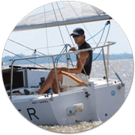
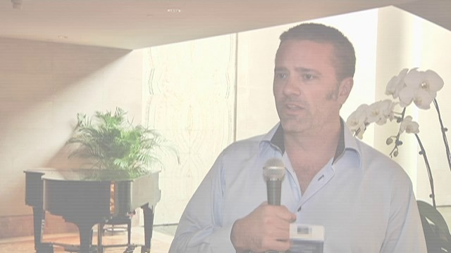
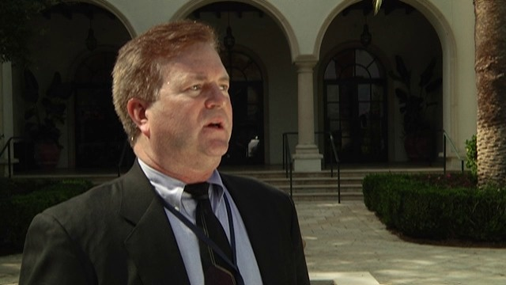
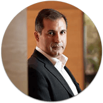
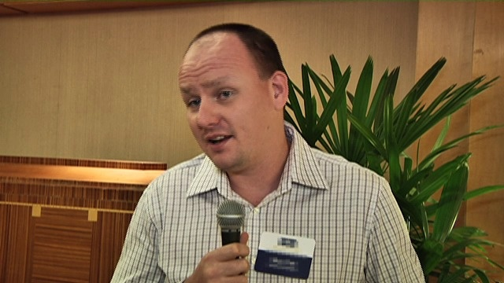
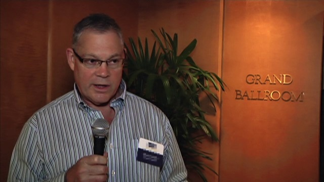
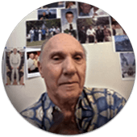
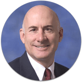
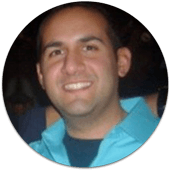
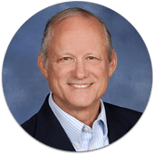

Why I Joined the Stansberry Alliance
Alliance Partners share their uncensored experiences with the Stansberry Alliance

At the time, it was really expensive, but I decided to take the plunge and become a member. You taught me how to be a great investor, with your "be greedy when others are fearful...", "cheap, hated and in an uptrend", "cocktail party indicator." By applying your principles, you saved me from buying a Condo in Miami in 2006, made me tons of money in the silver bull market, buying a Condo in Miami in 2011, when things were getting from bad to less bad, and now, making lots of money selling puts. Thank you for your teachings."
— Alejandro R.
Alliance Partner

That is when I began to learn about selling puts and making Alpha trades. I have done very well since then and have been able to replace my IT Manager salary plus some. I don't make every trade recommendation I read about. I do my own homework and I design my own trades often.
As for retirement, I highly recommend it. I understand it may not be for everyone but I lived my job for years. Doing so added a lot of baggage to my life and the stress level was often very high. I knew no other way. Today, I get up and do what I want. I spend a couple hours a day typically reading and/or studying (sometimes a bit more). The rest of the day is mine, to do whatever I want. The nice thing is, I have time to do everything but need not do everything today."
— Terry D.
Alliance Partner
I get more information than I can take in, but part of being an Alliance member is receiving a compact weekly synopsis of what was printed the previous week... so I never feel as though I missed something. I'm not comfortable giving away specifics, but suffice it to say that I have made more money trading options since becoming an Alliance member than I did in the corporate world by far!!! And I feel comfortable that I can earn an income stream in any market."
— Kimberly C.
Alliance Partner

When I first joined, my brother-in-law asked me "How long do you think it will take to recover the investment?" Good question, no answer.
In hindsight, it was my best investment ever! Actually, at times the full amount has been recovered in only a few days. Ten years later, I am pleased that I took that leap of faith. This membership provides privileges that I enjoy almost daily."
— David M.
Alliance Partner

Being an Alliance Partner has allowed me as a Financial Planner to offer my clients an unbiased view and recommendations of what really is happening in the world, instead of the garbage promulgated by MSNBC and the biased newspapers. Your research is par excellent, you educational efforts in all phases of your work and offerings is the best and not only helps me understand and learn, but in turn provides my clients with a road map of sound investment knowledge, research and planning for their own individual financial plans. Having been in the business for 54 years (EF Hutton, Drexel Burnham, Oppenheimer and now, Thank G-D, independent) it is like a breath of fresh air to receive your research."
— Richard M.
Alliance Partner
I feel like for the first time in my entire life (I'm 43 years old) I am getting the real story on what is happening in this world - this is why I can't get enough!"
— Mike W.
Alliance Partner
In 2010 I attended the Alliance Meeting in Zurich, which was an unforgettable experience. But for me, the biggest return was not even in the profits I made from your recommendations.
The main benefit is in the education I receive, not just about investing, but also about the financial system, history, politics and marketing.
As Porter always says, "there is no teaching, there is only learning". I don't know whether that's the whole truth, but receiving a ton of high quality information in your inbox every day makes learning a pleasant and easy task for a curious mind. Thank you so much and keep up the good work."
— Henk W.
Alliance Partner
I have profited to the tune of several million dollars over these years. I never in my investing career, which dates back to 1967, achieved the rates of return that I have in the last decade."
— Herbert B.
Alliance Partner

I have two degrees (Business Administration & Actuary), a MBA and a PhD in Economics — but I have learned much more about business, finance and economics through Stansberry than all my degrees combined — by far. As a result, I'm richer, smarter and wiser today than I was before."
— Adriano R.
Alliance Partner
The Alliance subscription seemed expensive at first... until I compared it to what financial investment advisors charge. Now I congratulate myself for subscribing when I did and locking in what now seems like a bargain price. I have never regretted the subscription. There is a lot of information out there about investing; but it's difficult to comb through it and figure out what's good and what to ignore. From the beginning of my first subscription, I felt comfortable with the information I received because it was presented in a logical, easy-to-understand way, was bolstered with mini-tutorials in relevant subjects, and made common sense.
I have learned so much. I am able to venture into investing areas like options and short sales that I would never have imagined I could do. The subscription has broadened my knowledge in many other areas too because the information about the recommended investments is so comprehensive. I've learned about shipping, oil, natural gas, housing, government rentals, and many more areas. I love it!"
— Laura P.
Alliance Partner

In 2003, after reading your reports about the demise of the U.S. Dollar, I changed all my U.S. dollar savings into Australian dollars. Not only had my savings grown very substantially but my money has been earning much higher interest all this time.
In 2005, I bought gold at US$450 per oz and have kept most of it until now.
In 2006, when I read from your reports how dangerous the U.S. property market was, and when I heard Hong Kong Bank bought Household International, I told all my family and friends to sell their Hong Kong Bank stocks. Not many of my friends benefited from my advice, but they all remember that I was the smart one who told them about the impending crisis.
Thanks to the knowledge I've gained, I have not just become rich, but I have also earned a lot of respect from family and my friends. I am proud to say that I am the "envy" of lots other women."
— Patricia F.
Alliance Partner
"I have family over in Ukraine and have found it necessary to give them some support. I don't believe I could have done that without your help. The cost of maintaining a home with roof replacement, replacement of major appliances, interior decorating and some vacations and travel all take lots of money. Not everyone I know has found it easy in today's economy. It does help to have an edge in facing the ever changing times we are in. So a thank you to Porter and all his assistants. You guys (and gals) do a great job."
— Mervyn D.
Alliance Partner

Unfortunately, I have not been to any of your events - can't afford the time, maybe when I retire... But I still feel like part of the "family", and know the quirks of each of the strong personalities on the team. Mostly I value an education in investing that is its own reward, as well as providing for my retirement."
— Al H.
Alliance Partner

At the time, it was really expensive, but I decided to take the plunge and become a member. You taught me how to be a great investor, with your "be greedy when others are fearful...", "cheap, hated and in an uptrend", "cocktail party indicator." By applying your principles, you saved me from buying a Condo in Miami in 2006, made me tons of money in the silver bull market, buying a Condo in Miami in 2011, when things were getting from bad to less bad, and now, making lots of money selling puts. Thank you for your teachings."
— Philip C.
Alliance Partner
I have been a practicing ophthalmologist for 41 years and recently sold my practice. I enjoy reading all your articles and have made literally millions following your sagacious advice. My dividend income is in the mid 6 figures from YOUR suggestions. A large part of my income I give to charities."
— Dr. Vlado V.
Alliance Partner

If this rate of return continues through the end of the year it means we won't have to touch our principal for living expenses this year and will even be able to grow our net worth. This is even with holding about 30% cash for the year. My greatest problem is deciding which Stansberry recos to invest in. Currently we have way too many positions even though almost all of them are producing great returns."
— Bob A.
Alliance Partner
I just replaced my old Toyota with a new BMW (finally giving my 6'7" tall husband a vehicle that doesn't head-smack him), paying in cash. I also manage retirement accounts for my brother and my best friend, and both of them will be able to retire with 20x more funds than the average American because I follow Stansberry research."
— Alison S.
Alliance Partner

Although I'm only 32 years old, I've concluded the way we spend our free time is important; it should be used to learn new things, enjoy new experiences and build meaningful relationships with people who will add as much value to your life as you will theirs. It is with the utmost confidence that I can truly say that my Alliance Partnership falls into those categories and has been one of the best decisions I've made. I look forward to many more years ahead."
— John P.
Alliance Partner
"I love Doc's letters, Retirement Trader and Retirement Millionaire. Doc and his ideas have changed how I will invest for the rest of my lifetime.
Dan Ferris is also a favorite of mine and I love when his articles come out, as his investing style is consistent with mine. With the above newsletters, I've generated well over $225,000 of net put revenue in the last 30 months."
— Steven W.
Alliance Partner
Porter, my Alliance Partnership is not for sale at any price. Thank you for this great service."
— Norm H.
Alliance Partner
When I first signed up and pressed the send button, transferring thousands of dollars to a guy I had never met but only read articles from, it was in many ways an expression of trust. What I was fascinated by was that Porter promised me nearly everything he published forever. And it was good. And well written. Of course the caveat was whether he would keep on writing and be true to his word. And Porter has delivered, and then some. The new publications just keep coming. They're of the highest quality... and as varied as they are interesting."
— Michael D.
Alliance Partner

"From Dan Ferris' commitment to value and the long-term picture... to Porter Stansberry's early unease and concern about the markets in 2007 and 2008 to Dr. Sjuggerud's buoyant and insistent optimism in the Spring of 2009 - my Alliance Partnership brought me through the financial crisis with limited losses. It only took me just over a year to totally recover!
I know many people who are still suffering from 2008, six years later - especially those with major holdings in mutual funds. I'll never forget it, or stop feeling grateful for the Alliance newsletters. (I only wish I had more cash in the spring of 2009!)"
— John D.
Alliance Partner
Click here to return to the Alliance Partner Prospectus.